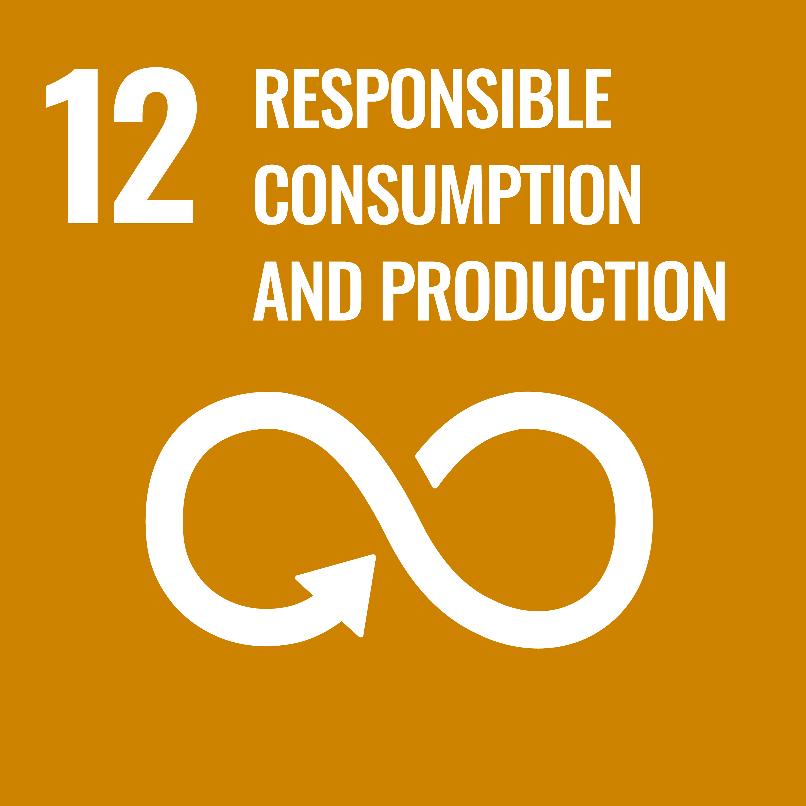
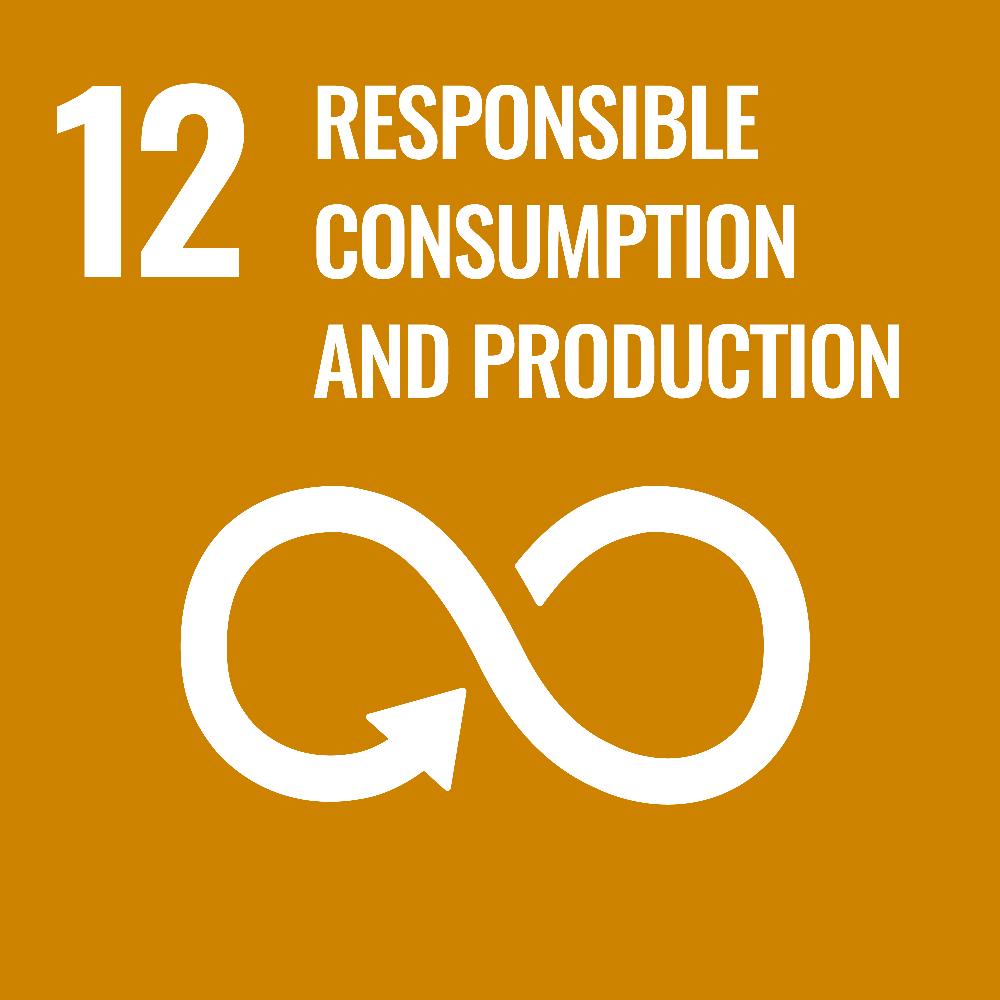

TENTANG KAMI
‘Masalah’ yang Berlangsung
1.167.451,75 ton
Timbulan sampah Bali
pada tahun 2024
~3,400 ton
rata - rata sampah yang
dihasilkan per hari
~17%
merupakan sampah plastik
susah terurai
BALIASRI, Pionir Keberlanjutan
BALIASRI hadir sebagai platform yang menghubungkan masyarakat dengan banjar, pengelola sampah, serta pelaku bisnis untuk pengelolaan sampah yang optimal. Kami percaya bahwa perubahan besar dimulai dari langkah kecil seperti memilah, mengolah, dan mengurangi sampah sejak dari sumbernya. Melalui BALIASRI, kami mendorong pemanfaatan plastik sampah menjadi produk bernilai tinggi dan sistem rewards yang menguntungkan bagi pengguna.
Kolaborasi, Kunci Keberhasilan
Keberhasilan pengelolaan sampah tidak bisa berjalan sendiri. Baliasri membangun ekosistem kolaboratif yang melibatkan platform digital, partisipasi rakyat sebagai member, dukungan banjar, serta operasional TPST/TPS3R. Bersama itu, kami menggandeng UMKM, franchise, dan ecommerce untuk menghadirkan sistem rewards yang memberi manfaat nyata bagi masyarakat. Kolaborasi inilah yang menjadi kunci terciptanya Bali yang lebih hijau dan berkelanjutan.
Kami Mendukung Program SDGs PBB


 
